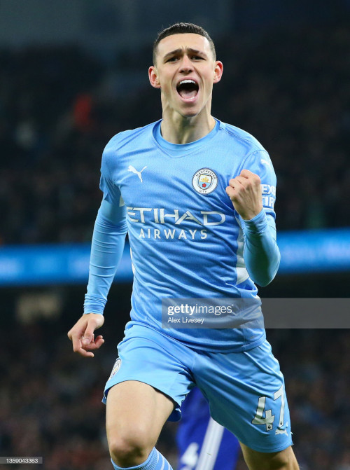

1. Kevin de Bruyne
Belga, não consegue decidir nem o que come no café da manhã!
2. Phil Foden
A famosa promessa inglesa. Se isso vingar eu viro uma geladeira Brastemp!
3. Bernardo Silva
O simples fato do cara ser português faz o Xavi preferir ele do que o De Jong. Maluquinho!